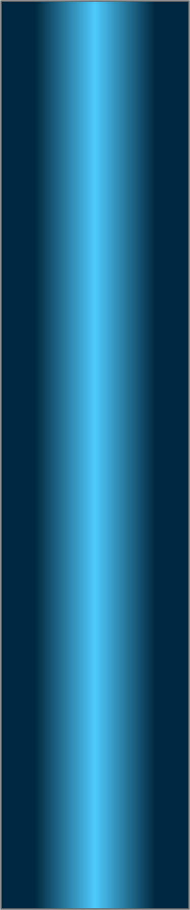
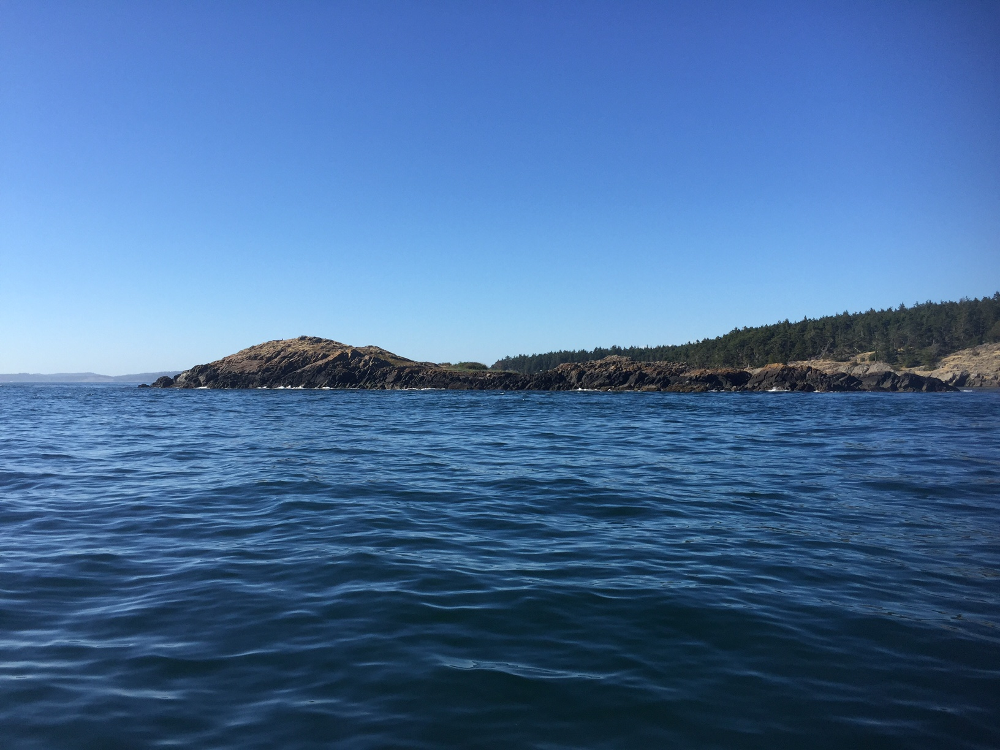
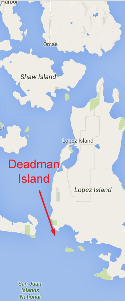
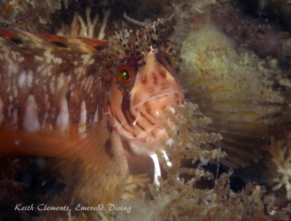
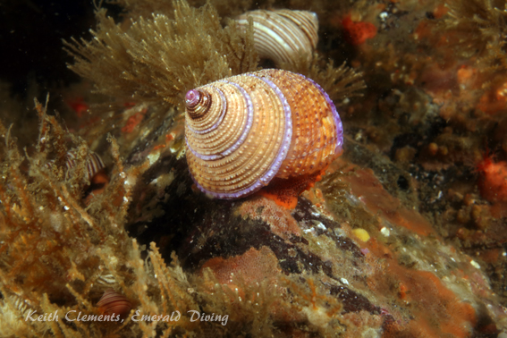
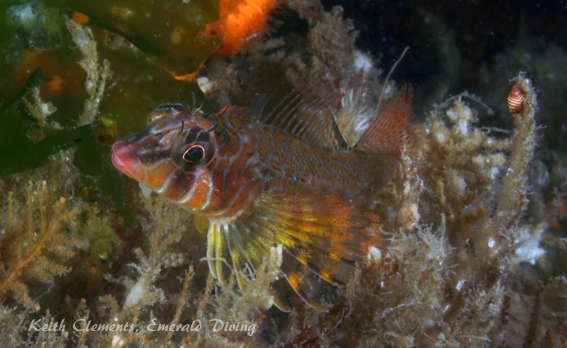
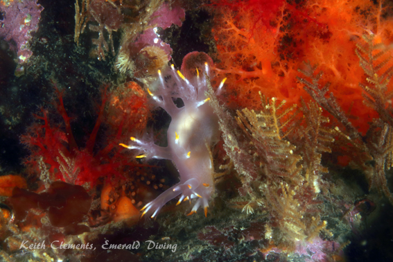
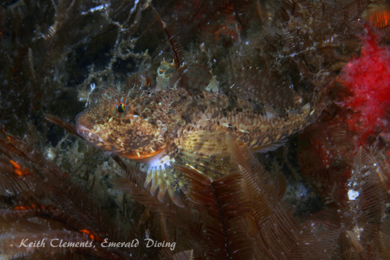
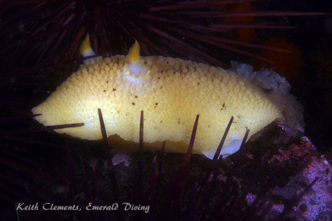

Double click to edit

Deadman Wall
Topography: Steep sloping rocky substrate consisting of an extensive field of rocks and small boulders interspersed with some sheer walls and overhangs.
San Juan Islands marine life rating: 4.5
San Juan Islands structure rating: 3.5
Diving depth: 80-110 feet
Highlight: Back-drop of brilliant orange burrowing sea cucumbers and ostrich-plume hydroids provide a colorful habitat for a great variety of nudibranchs, rockfish, sculpins, and greenlings and a dense population of invertebrates.
Skill level: Intermediate when done on a mild ebb
GPS coordinates:
Access by boat: Deadman Island is located on the eastern side of the San Juan Channel area, just northwest of Long Island. The wall is on the south side of the small island.
Shore access: None
Dive profile: This is a great ebb dive in San Juan Channel to compliment incredible the Whale Rocks and Long Island dive sites, which are flood or slack dives. The southern side of the island descends quickly to depths well beyond recreational diving limits, but most of the substrate is not sheer. Although there are some very nice walls in places, much of the substrate consists of a steeply sloping rock and boulder fields that cascade down at about a 45 degree angle. Most of the walls I encounter are on the western half of the south side of the island. The walls vary in size and depth, but seem to start below the 50 foot mark. Some of the walls are only 3 or 4 feet tall, while others are over 20 feet in height. It is around these walls that more fish seem to aggregate.
Kelp lines much of the shoreline at this site, making for an interesting safety stop and some great photography when the water quality at the surface is good.
As with all San Juan Island diving, I run a live boat when diving here due to the intense currents nearby. This is one site that could potentially be done with an anchored boat, but I prefer to error on the side of caution.
My preferred gas mix: EAN 32
Current observations:
Current Station: San Juan Channel (south entrance)
Noted Slack Corrections: None
This is definitely an ebb dive, and I have only dived this site on ebbs of 2.0 knots or less (San Juan Channel, south entrance). On the ebb, the current literally rips to the south by the western end of this island, so I am careful not to venture too far to the west along this wall. The western end of Deadman Island juts out into the raging ebbing current to create a back-eddy, so there can be light currents along the wall that generally pushing gently to the west. This back eddy may be more intense on larger tidal exchanges.
On the flood, the current hits this wall directly and can cause major upwellings and heavy current to the west along the island. It is this current that feeds the dense invertebrate life at this site, but creates a dangerous situation for divers in the water.
Hazards:
Current: Strong current on flooding tides with upwellings and possible downwellings. Extremely strong currents off the west end of the island on ebbs.
Depth: Generally I dive to about 100-110 feet at this site, however the aggressive slops and small walls at this site drop well below recreational diving limits.
Wind: Although this site is somewhat protected as it is tucked in closely to the channel, a south wind or swell can effect this site.
Boat launches:
Cornet Bay. Approximately 16 miles from the dive site. This park offers a good boat launch with docks, and restroom facilities. Note that a Discovery Pass is required to use this launch.
Marine life: A dense carpet of brilliant orange burrowing sea cucumbers provides a colorful backdrop for this site. As with many San Juan sites, giant red and purple sea urchins also abound, and a host of different coralline algae add yet more purple to this already colorful seascape.
What I really like about this site is the variety of nudibranchs and the descent fish populations. Huge sea lemons, heath’s dorids, San Diego dorids, variable nudibranchs, Dall’s diamondback nudibranchs, orange spotted nudibranchs, three-lined aeolids, different species of tiny dotos, Cockerel's dorids, and Ohder’s dorid all thrive here, just to name a few. This site is an amazing nudibranch safari!
Fish wise, hundreds of Puget Sound rockfish use the boulder fields as cover and can be find hiding in or hovering close to the rubble. Some black and yellowtail rockfish can also be seen near the walls, and can copper and quillback rockfish. Although the kelp greenling are plentiful, the lingcod I have found at this site have been very small. Sculpins of all sizes are in abundance as well, from great sculpins, to colorful longfin sculpins, to tiny sculpins that are hard to identify. A careful eye will spy a mosshead warbonnet or longfin gunnel hiding amongst the dense collection of invertebrates. If you are really lucky, you may also find a gaint Pacific octopus.
Anemone population are more limited at this site compared to Long Island and Whale Rocks, although you can find the occasional crimson anemone and seemingly ever present plumose anemones. There are also Puget Sound king crabs at this site, along with a host of small spider crabs.
This is one of those sites where it is just fun to poke around and see what you can find. If you are a photographer, this is a great macro lens dive site.
San Juan Islands marine life rating: 4.5
San Juan Islands structure rating: 3.5
Diving depth: 80-110 feet
Highlight: Back-drop of brilliant orange burrowing sea cucumbers and ostrich-plume hydroids provide a colorful habitat for a great variety of nudibranchs, rockfish, sculpins, and greenlings and a dense population of invertebrates.
Skill level: Intermediate when done on a mild ebb
GPS coordinates:
Access by boat: Deadman Island is located on the eastern side of the San Juan Channel area, just northwest of Long Island. The wall is on the south side of the small island.
Shore access: None
Dive profile: This is a great ebb dive in San Juan Channel to compliment incredible the Whale Rocks and Long Island dive sites, which are flood or slack dives. The southern side of the island descends quickly to depths well beyond recreational diving limits, but most of the substrate is not sheer. Although there are some very nice walls in places, much of the substrate consists of a steeply sloping rock and boulder fields that cascade down at about a 45 degree angle. Most of the walls I encounter are on the western half of the south side of the island. The walls vary in size and depth, but seem to start below the 50 foot mark. Some of the walls are only 3 or 4 feet tall, while others are over 20 feet in height. It is around these walls that more fish seem to aggregate.
Kelp lines much of the shoreline at this site, making for an interesting safety stop and some great photography when the water quality at the surface is good.
As with all San Juan Island diving, I run a live boat when diving here due to the intense currents nearby. This is one site that could potentially be done with an anchored boat, but I prefer to error on the side of caution.
My preferred gas mix: EAN 32
Current observations:
Current Station: San Juan Channel (south entrance)
Noted Slack Corrections: None
This is definitely an ebb dive, and I have only dived this site on ebbs of 2.0 knots or less (San Juan Channel, south entrance). On the ebb, the current literally rips to the south by the western end of this island, so I am careful not to venture too far to the west along this wall. The western end of Deadman Island juts out into the raging ebbing current to create a back-eddy, so there can be light currents along the wall that generally pushing gently to the west. This back eddy may be more intense on larger tidal exchanges.
On the flood, the current hits this wall directly and can cause major upwellings and heavy current to the west along the island. It is this current that feeds the dense invertebrate life at this site, but creates a dangerous situation for divers in the water.
Hazards:
Current: Strong current on flooding tides with upwellings and possible downwellings. Extremely strong currents off the west end of the island on ebbs.
Depth: Generally I dive to about 100-110 feet at this site, however the aggressive slops and small walls at this site drop well below recreational diving limits.
Wind: Although this site is somewhat protected as it is tucked in closely to the channel, a south wind or swell can effect this site.
Boat launches:
Cornet Bay. Approximately 16 miles from the dive site. This park offers a good boat launch with docks, and restroom facilities. Note that a Discovery Pass is required to use this launch.
Marine life: A dense carpet of brilliant orange burrowing sea cucumbers provides a colorful backdrop for this site. As with many San Juan sites, giant red and purple sea urchins also abound, and a host of different coralline algae add yet more purple to this already colorful seascape.
What I really like about this site is the variety of nudibranchs and the descent fish populations. Huge sea lemons, heath’s dorids, San Diego dorids, variable nudibranchs, Dall’s diamondback nudibranchs, orange spotted nudibranchs, three-lined aeolids, different species of tiny dotos, Cockerel's dorids, and Ohder’s dorid all thrive here, just to name a few. This site is an amazing nudibranch safari!
Fish wise, hundreds of Puget Sound rockfish use the boulder fields as cover and can be find hiding in or hovering close to the rubble. Some black and yellowtail rockfish can also be seen near the walls, and can copper and quillback rockfish. Although the kelp greenling are plentiful, the lingcod I have found at this site have been very small. Sculpins of all sizes are in abundance as well, from great sculpins, to colorful longfin sculpins, to tiny sculpins that are hard to identify. A careful eye will spy a mosshead warbonnet or longfin gunnel hiding amongst the dense collection of invertebrates. If you are really lucky, you may also find a gaint Pacific octopus.
Anemone population are more limited at this site compared to Long Island and Whale Rocks, although you can find the occasional crimson anemone and seemingly ever present plumose anemones. There are also Puget Sound king crabs at this site, along with a host of small spider crabs.
This is one of those sites where it is just fun to poke around and see what you can find. If you are a photographer, this is a great macro lens dive site.






Purple Rington Snail
Longfin Sculpin
Variable Dorid
Northern Staghorn Bryozoan
Underwater imagery from this site

Scalyhead Sculpin
Mosshead Warbonnet

Ses Lemon Nudibranch